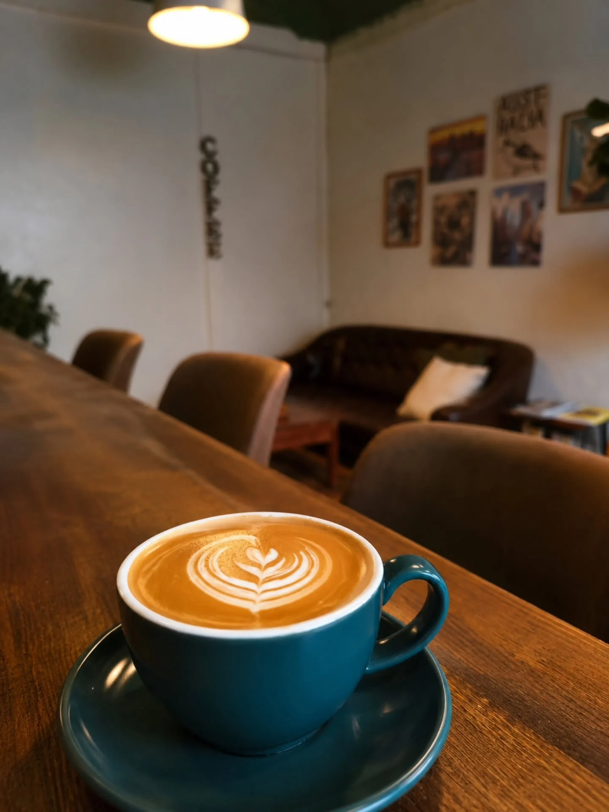
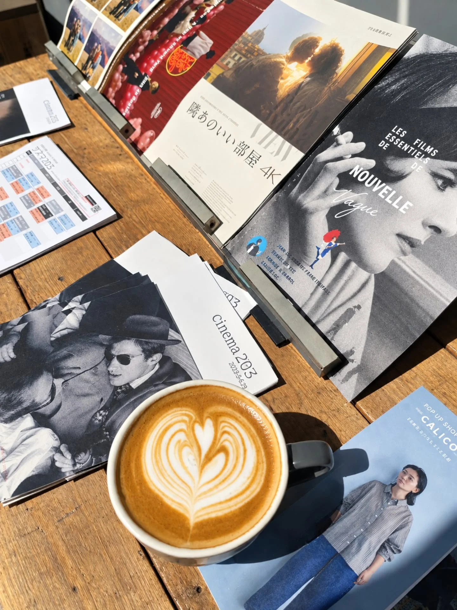
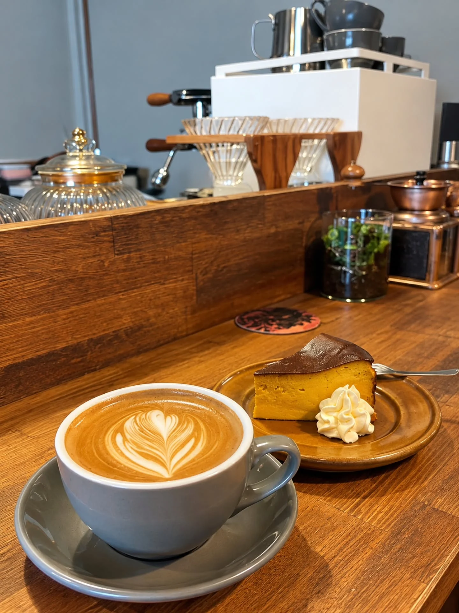
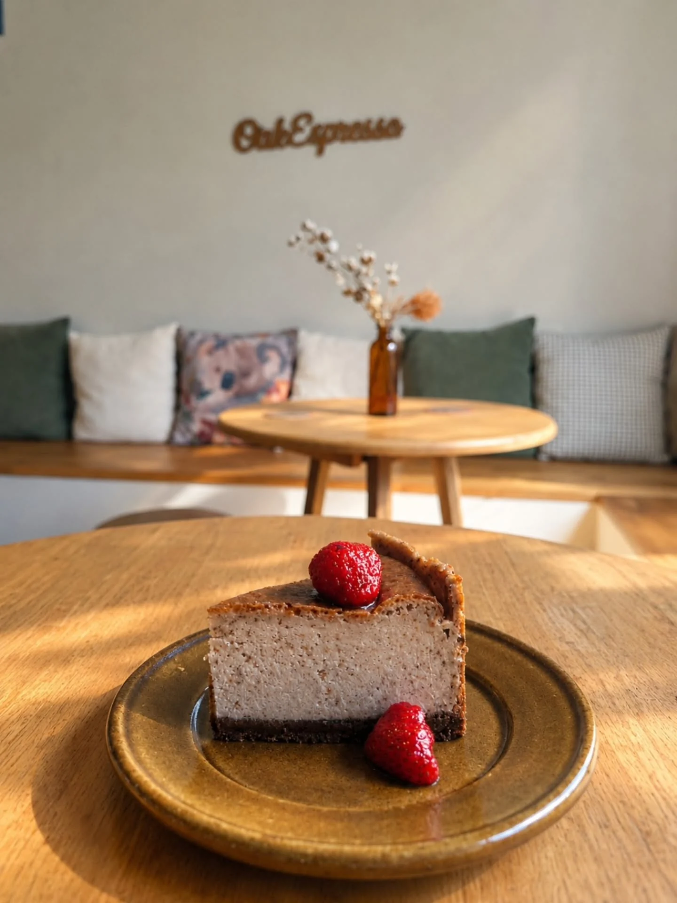
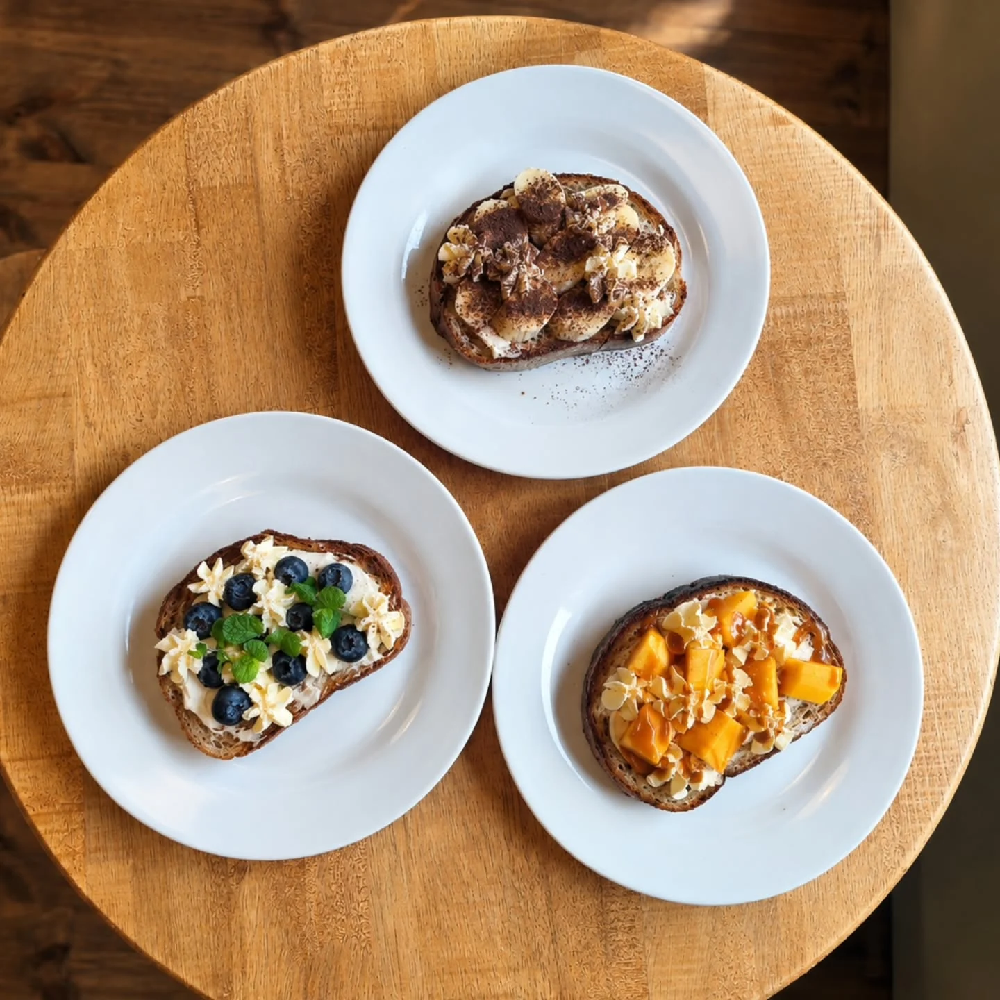
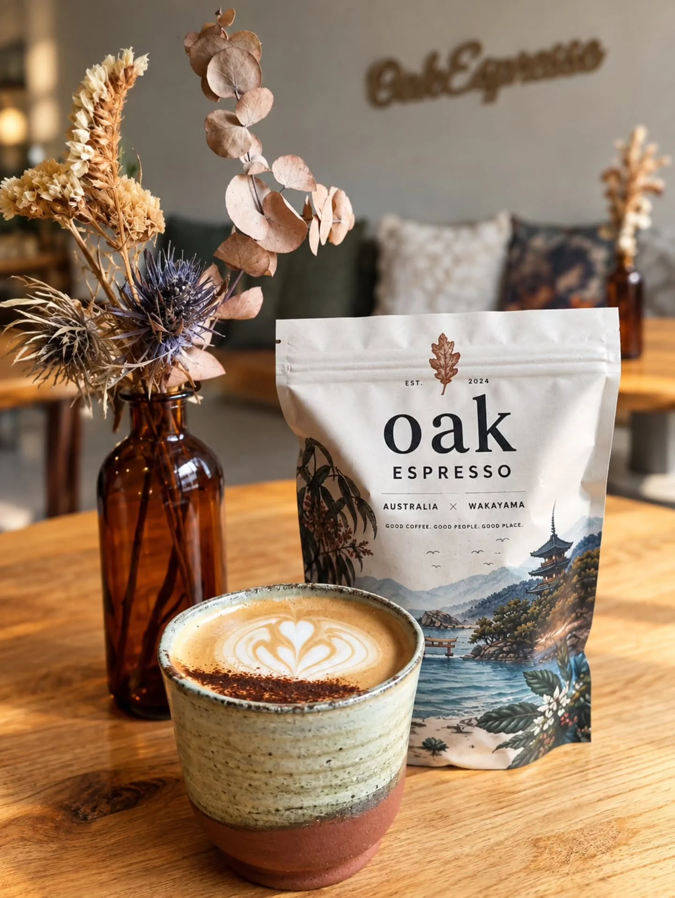
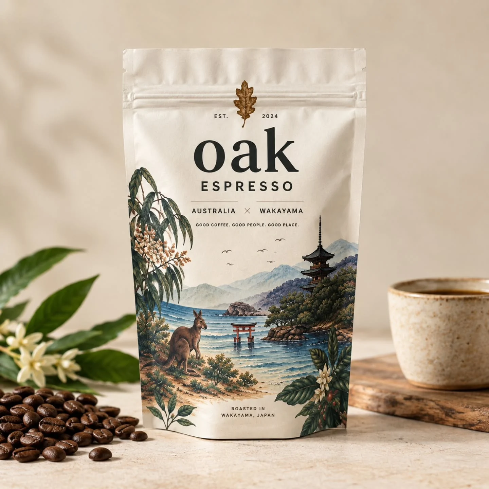
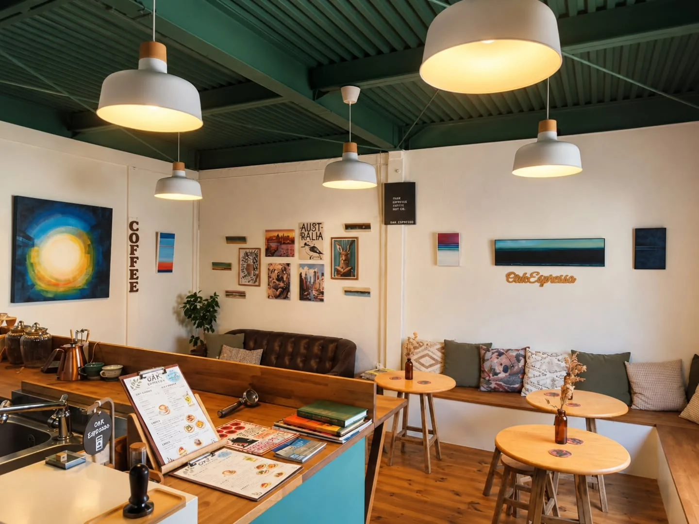
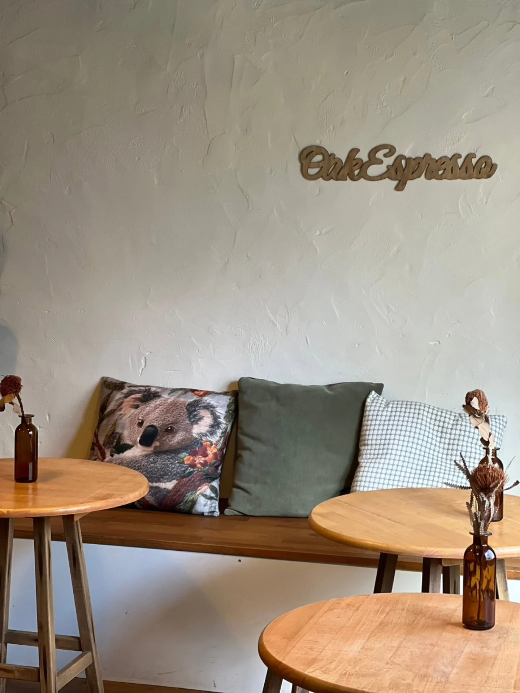

05 / OUR STORYオーストラリアから、
オーストラリアから、
和歌山へ。
✳
料理人として経験を重ね、コーヒーのある日常に親しんできた店主。和歌山で始まったOAK ESPRESSOには、土地を越えて人が集まる場所をつくりたいという思いが込められています。
開業時の本人公開ストーリーに基づく紹介文。店主確認前の提案コピーです。北ぶらくり丁の2階に、小さなコーヒーの居場所。
一杯から始まる、心地よい時間を。

✳ OUR PHILOSOPHY
オーストラリアのカフェ文化に親しんだ店主が、和歌山の北ぶらくり丁で始めたOAK ESPRESSO。コーヒーを味わうひとときが、街の新しい出会いにつながっていく。

✳ GOOD THINGS, MADE WITH CARE
ラテやコーヒーに、甘いものや食事を添えて。写真でお店の楽しみ方をご紹介します。



※写真はこれまでに紹介された商品の一例です。最新の提供内容はInstagramでご確認ください。

コーヒーを飲む時間だけでなく、豆を選ぶ時間も。店頭で扱うOAK ESPRESSOのコーヒーパッケージには、オーストラリアと和歌山をつなぐデザインが描かれています。

✳ FEEL AT HOME


木の温もり、壁のアート、心地よい距離感。写真の中にあるお店の空気を、そのまま感じてください。
料理人として経験を重ね、コーヒーのある日常に親しんできた店主。和歌山で始まったOAK ESPRESSOには、土地を越えて人が集まる場所をつくりたいという思いが込められています。
開業時の本人公開ストーリーに基づく紹介文。店主確認前の提案コピーです。北ぶらくり丁会館の2階にあるOAK ESPRESSO。初めての方は、Googleマップから場所をご確認ください。
和歌山県和歌山市中ノ店北ノ丁22
北ブラクリ丁会館 2F
最新の営業日・営業時間はInstagramをご確認ください。